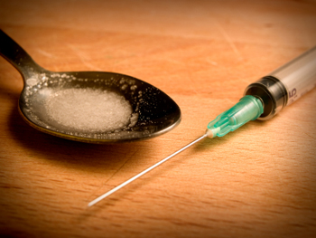
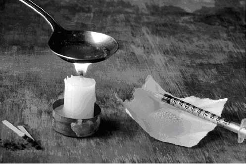

HEROIN
OVERVIEW:
According to the U.S. Central Intelligence Agency,
worldwide production of opium has doubled since the
mid-1980s. The result has been easier and cheaper access
to the drug and worsening social problems, such as crime,
associated with its abuse. Derived from opium, heroin is
a highly addictive drug, and its use is a serious and growing
problem. Rising purity levels and lower prices have
fueled
Heroin's
popularity.
The widely held misconception that snorting or
smoking it is Less Addictive than intravenous injection
lures new young users. Any ingestion of heroin promotes
tolerance and drug cravings that can, and frequently do,
lead to addiction. Teens and young adults across the
country are learning the hard way that heroin addiction
can come just as easily in a pipe as a needle.
Origin and production
Heroin is a narcotic derived from the opium poppy
plant (Papaver somniferum). Opium poppy is grown primarily
by destitute farmers in what is known as the
Golden
Crescent in Southwest Asia
(encompassing
Turkey,
Iran, Afghanistan,
and Pakistan) and the Golden
Triangle
in Southeast Asia
(Burma, Thailand,
Laos, and
Vietnam).
In the Americas,
Columbia and Mexico are
chief
producers.

CHEMICAL/ORGANIC COMPOSITION:
All drugs derived from opium poppy are called opiates.
Of the opiates, heroin (diacetylmorphine) is the
most
potent and fast-acting. Though
heroin is no longer
used
in medical settings, its less potent cousins�
codeine,
liquid morphine, pethidine, and methadone�
are
found in clinics and hospitals all over the world. But
it
wasn�t
until the early 1970s that scientists began to
understand
the real reasons behind heroin�s
propensity
for
abuse and addiction.
The chemical composition of opiates are remarkably
similar to endorphins, chemicals produced by the
brain in times of distress or injury to relieve pain or ease
fear. There are three major types of endorphins: beta
endorphins, located in the brain; and enkephalins and
dynorphin, which are distributed throughout the brain
and body.
Types Of Heroin

Most heroin is packaged and shipped in bricks of
powder. Pure heroin is white, but the color when it
reaches the user can vary from yellow to dark brown,
owing either to impurities during the manufacturing
process, the presence of powdered additives, or both.
Heroin is usually cut with baking soda, powdered
milk, baby powder, sugar, starch, or quinine, but has also
known to be cut with lidocaine, curry powder, strychinine,
and even laundry detergent.
Law enforcement officials
in New York
report the existence of heroin cut with
a
rat poison from Santa Domingo called Tres
Pasos
(meaning
�three steps�). Three
is the number of steps the
mice
take before dying after exposure to the poison.
Another form of heroin commonly distributed in
the western and southwestern regions of the United
States is called Black Tar or Mexican Brown. These
varieties are produced in Mexico and�because they�re
manufactured crudely�have an either hard black coal
or sticky, tar-like consistency. Purity rates range from
20 to 80%.
In 1980, the purity of heroin was somewhere in the
4% range. In 2002, the average bag sold by dealers in the
United States was almost 40% pure, and sold for less
than one-fifth the 1980 price.
EFFECTS
Mental
The force of heroin�s initial impact on the user, and
the duration and intensity of the high, depends on the
method of ingestion. If injected directly into the bloodstream,
the euphoric Rush hits the user in less than 10
seconds.
Intramuscular or subcutaneous injection produces
a much more gradual response as the drug takes
longer
(six to eight minutes) to filter into the bloodstream.
Smoking heroin also produces less of an initial
rush
and a more gradual response to the dose, anywhere
from
10 to 15 minutes.
It is the drug�s sudden entry into the brain that
accounts for the initial surge of energy. The rush is
thought to last as long as it takes the brain and body to
break heroin down into morphine, which is then
absorbed by the body's opioid receptors. This stage finds
the user going �on the nod,� an alternatively wakeful and
pleasurably drowsy state that lasts four to six hours.
PHYSIOLOGICAL EFFECT
Heroin is a central nervous system depressant. The
drug slows heart and breathing rates dramatically. During
the Nod Off
phase, consciousness may be lost. Any
one
of these effects
is dangerous to the user; in combination,
they are potentially life-threatening. Given the
high
incidence of nausea and vomiting associated with
heroin
use, for example, users who lose consciousness
and then become sick are at risk of choking to death.
As is the case with other opiates, regular ingestion of
heroin creates rapid tolerance in the user. Even over a relatively
short period, weekend users may find themselves
taking
larger
doses of the drug to achieve the same high.
As
many recovering addicts will attest, this is the often the
first
addictive hook heroin gets into recreational users.